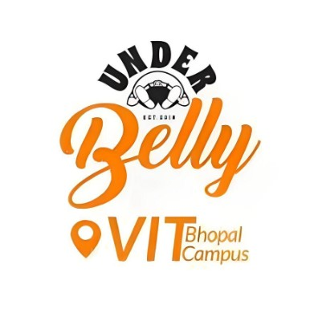

As a student pursuing Computer Science and Engineering (CSE) at Vellore Institute of Technology, Bhopal, I am fortunate to be immersed in a dynamic and enriching academic environment. Currently in my 3rd year, I have had the opportunity to delve deep into various aspects of computer science and sharpen my skills in programming, algorithms, data structures, and software development.
Being a part of VIT, I have access to state-of-the-art facilities and resources that enable me to explore and experiment with the latest technologies and tools in the field. The university's emphasis on practical learning and industry exposure has further enhanced my understanding and prepared me for real-world challenges.

The MERN Stack website is designed to facilitate the delivery of food from the college cafe to the hostels.
The website allows college students to browse the cafe's menu, place food orders, and have them delivered directly to their hostels. It aims to provide a convenient and efficient solution for students to satisfy their food cravings without leaving their dormitories.
A drowsiness detection model using machine learning is a system that leverages ML algorithms to identify signs of drowsiness in individuals. The model is trained on a dataset consisting of various features related to drowsiness, such as eye closure duration, eye blink rate, head movement, and facial expressions.

VIT-Quiz is an interactive quiz platform developed using Java Swing, a graphical user interface (GUI) toolkit for Java. This project aims to provide a user-friendly and engaging environment for conducting quizzes within the Vellore Institute of Technology (VIT) community or any similar educational institution.
The VIT-Quiz application allows users to participate in various quizzes on different subjects or topics. The GUI provides intuitive navigation, enabling users to select and start quizzes, view their progress, and submit their answers. The platform supports multiple-choice questions, where users can select the correct option from a list of choices.

VIT-Game is an interactive Java Swing project that brings the activities and experiences of VIT University to life in a captivating game format. This game aims to provide an immersive and enjoyable gaming experience for players, allowing them to explore various aspects of college life within the virtual VIT campus.
Players can navigate through different locations within the VIT campus, such as classrooms, libraries, laboratories, sports facilities, hostels, and cafeterias. Each location offers unique challenges and activities related to the corresponding area. For example, in classrooms, players can solve quizzes or puzzles, while in sports facilities, they can play virtual video games for recreation.